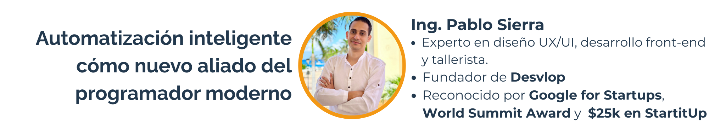

13 Automatización inteligente cómo nuevo aliado del programador moderno

LinkedIn: https://www.linkedin.com/in/tugoman/
13.1 Entrevista
¿Quién es Pablo Sierra?
Mi nombre es Pablo Sierra. Llevo más de una década desarrollando productos tecnológicos. Hasta ahora he trabajado con Inteligencia Artificial, pero desde hace mucho tiempo he estado creando soluciones con Machine Learning para diferentes ámbitos.
Desarrollé tecnologías para el turismo que me han llevado a participar en varios campeonatos. Algunos los gané, otros los perdí. Esta experiencia se ha fortalecido con el tiempo; he trabajado en otros países y con grandes compañías. También he colaborado con el Estado en temas de ciberseguridad y asesoramiento tecnológico.
Actualmente, además de eso, soy emprendedor y empresario en otros sectores, como el aeronáutico. Hace un par de años vendimos, con mi familia, una compañía en ese sector. También soy diseñador UX/UI y desarrollador Front. Hoy en día, gracias a muchas implementaciones de la IA, ya casi que me desempeño como full stack.
¿Qué significa para ti la “automatización inteligente” y cómo se aplica en el ciclo de desarrollo de software?
La pregunta es muy interesante porque el tema de automatizar siempre ha existido. En más de dos décadas, la tecnología ha ido tomando más fuerza. Hemos automatizado con Machine Learning, con conexión de datos, con respuestas. Cuando surgieron los chatbots fue más comercial, pero ayudó a entender la automatización.
Incluso dentro de la programación, herramientas como GitLab y GitHub nos ayudan a versionar y gestionar el código. Ese tipo de automatizaciones han evolucionado. Hoy, gracias al auge de la Inteligencia Artificial, se están volviendo más inteligentes.
La IA es un sistema cognitivo que permite acceder a redes neuronales que interconectan patrones. Esto nos ayuda a resolver dudas e ideas. En este año, con la llegada de los agentes, la automatización inteligente nos permite tener un aliado, un “cerebro secundario”, que puede codificar por nosotros y automatizar procesos, no solo a nivel interno, sino también en el producto final: automatizar el trabajo del cliente y de las personas alrededor.
Para mí, ese es el verdadero significado de la automatización actual: está generando un éxito rotundo. Al ser más inteligente, no tiene límites. Como programador, es increíble. Y como emprendedor, los límites que antes existían, ya no están. Esto le va a dar un giro importante al aspecto cultural y al desarrollo en Centroamérica y Latinoamérica.
¿Qué impacto has visto en la forma de trabajar de los programadores desde que se integran procesos automatizados?
Ya en temas de proyectos de software, los beneficios reales están en el tiempo, los recursos y los límites. Por ejemplo, cuando programamos en un equipo multidisciplinario —con DevOps, backend, base de datos, frontend y control de calidad— desarrollábamos un software en, al menos, cuatro meses.
Hoy, al tener acceso a sistemas cognitivos conectados a internet que recaban información, todo se simplifica. Las tareas se reducen a horas o minutos. Puedes crear un prototipo en 3 o 4 horas, y terminar el desarrollo al 90 % en 2 o 3 semanas.
Este es el impacto más grande: ahorro en costos, mayor velocidad y eliminación de límites. Antes, si no tenías un equipo, no podías cerrar el ciclo de desarrollo. Ahora, un solo programador puede hacerlo todo, entregar un producto o prototipo en cuestión de horas. Ese es uno de los beneficios más importantes.
¿Cuáles son los beneficios más significativos de automatizar tareas dentro de proyectos de software?
En el ámbito del desarrollo de software, los beneficios e impactos reales se reflejan en el tiempo, los recursos y los límites.
Por ejemplo, al programar, se conforma un equipo de desarrollo multidisciplinario que incluye roles como DevOps, backend, base de datos, frontend y control de calidad para evaluar el producto. El impacto y los beneficios de esta estructura radican en que tareas que anteriormente requerían al menos cuatro meses de trabajo ahora, gracias a la automatización y a sistemas cognitivos conectados a internet para recopilar información, se simplifican y se reducen a horas o incluso minutos.
Actualmente, es posible crear un prototipo en tres o cuatro horas y completar un desarrollo en un 90% en dos o tres semanas. Este es el impacto más significativo: ahorro de costos y eliminación de límites.
En el flujo de trabajo de desarrollo, si antes un programador necesitaba un equipo debido a los costos, hoy es una realidad que una sola persona puede completar todo el ciclo de desarrollo y entregar un producto o prototipo a un cliente en cuestión de horas. Este es uno de los beneficios más importantes en este contexto.
¿Qué herramientas o tecnologías consideras esenciales para implementar automatización en entornos de desarrollo?
Sí, hoy hay muchas herramientas nuevas de automatización, pero todo depende de qué tipo de programador seas y qué estés desarrollando. Personalmente he probado varias y veo que estamos entrando en una etapa de vibe coding, una programación impulsada más por emoción que por técnica. Aunque suene informal, creo que va a ser una revolución, sobre todo si los programadores la aplicamos bien a largo plazo.
Plataformas como Bol y Tempo generan código a partir de prompts, pero los que tenemos más experiencia vamos más allá: preparamos infraestructura, bases de datos y versiones en la nube. Herramientas como R Code, conectadas a APIs como Cloud Sonnet 3.7, permiten trabajar a un nivel más profundo, mejorando, diagnosticando y automatizando proyectos completos desde entornos como VS Code.
También recomiendo Replit, que está siendo apoyada incluso por grandes figuras como Elon Musk. Hoy, si no automatizamos, simplemente nos quedamos fuera. La crítica no debería ser hacia las herramientas, sino hacia la falta de conocimiento técnico.
Yo prefiero tener control de mi entorno y construir sobre mis propias estructuras, usando APIs como las de OpenAI, Anthropic o Google Gemini. Además, entender la diferencia de costos entre solicitudes simples y pensamiento profundo es clave para mantener el desarrollo eficiente y sostenible.
¿Puedes compartir un caso real donde la automatización haya marcado la diferencia en la eficiencia o calidad del proyecto?
Te hablo primero de un caso externo. Siempre digo que lo primero que debe hacer un programador es investigar, ver qué está pasando afuera antes de que algo se vuelva popular. Un argentino, sin saber mucho de Python, logró crear un agente para conversar con su abuelo usando hardware y una impresora 3D. Luego, con Cursor, entrenó su propio modelo de IA y lo conectó a la API de WhatsApp Business. Terminó armando un asistente que agenda actividades y eventos, y en pocos meses consiguió 573 usuarios de pago. Es un ejemplo real de cómo, con lo mínimo, puedes construir algo exitoso.
En mi caso interno, llevo más de diez años trabajando en un producto turístico. Como emprendedor, es complicado sostener equipos de desarrollo. Pero con herramientas como VS Code, R Code y Replit, y usando pensamiento profundo con Cloud Sonnet 3.7, logré finalizar solo toda la plataforma, integrando pagos con Stripe, reconocimiento de dispositivos y compatibilidad con Apple Pay y Google Pay. En una semana y media hice la integración, y después construí dos productos más de renta de vehículos, que ya están operando en otro país.
En total fueron unas 120 o 130 horas de trabajo. Estos casos se están viendo en todo el mundo. Para mí, el futuro es claro: el desarrollo de software está migrando de SaaS a AaaS (Agents as a Service). Hoy, crear soluciones rápidas y a bajo costo no solo es posible: es necesario, sobre todo en Latinoamérica, donde los presupuestos son más ajustados. Estamos en un momento clave para quienes desarrollamos software.
¿Qué retos técnicos o culturales has enfrentado al introducir automatización en un equipo de desarrollo?
Hasta el año pasado tenía un equipo de desarrollo de varios países, y en nuestras reuniones me di cuenta de que, aunque usaban ChatGPT para resolver bugs, no conocían herramientas como Cursor. Les mostré cómo, con Cursor, podían resolver errores de manera más rápida y eficiente, entendiendo el contexto completo del proyecto, no solo copiando mensajes de error.
Ese fue un ejemplo claro del desafío cultural que tenemos. Algunos todavía creen que usar IA disminuye la calidad del trabajo, cuando en realidad viene a potenciar nuestras habilidades. La IA no reemplaza nuestra lógica de programación, conocimiento de infraestructura o bases de datos; más bien, es como tener un programador extra, disponible 24/7.
Hoy, aunque tengo equipo, muchas soluciones las construyo yo mismo, automatizando con Cloud 3.7 y Gemini 2.0 Pro. Incluso he probado instalar IA localmente, como DeepSeek, que requiere más espacio, pero te da un agente cognitivo real en tu máquina, sin depender de la nube.
Más allá de generar texto o código simple, estamos hablando de sistemas de razonamiento profundo. Como decía Dario Amodei de Anthropic, en los próximos 12 meses, entre el 90 y 95% del código será generado por IA. El desarrollo lo seguimos haciendo nosotros, pero el panorama ya cambió. Hoy, entender y adaptarnos a esta nueva etapa es clave si queremos ser parte de la primera generación que lleve la programación a un nuevo nivel.
¿Qué habilidades o conocimientos debería adquirir un programador que quiera trabajar con soluciones automatizadas?
En el desarrollo de software hay distintos niveles: junior, mid y senior. Para quienes están empezando, lo primero es dominar la lógica de programación antes de lanzarse a usar IA. Sin una base sólida, lo más común es terminar atrapado en errores como el “bug infinito”, simplemente porque no se entiende bien la estructura o el flujo lógico del proyecto.
Primero hay que saber construir: definir tecnologías, frameworks, lenguaje y arquitectura. Ya después, es cuando tiene sentido meterse en prompt engineering. No se trata solo de escribir prompts, sino de entender qué hace cada modelo de IA, porque no todos automatizan código: algunos solo interpretan o generan. Si quieres lograr verdadera automatización, debes entender conceptos como Deep Search, Deep Thinking y conocer bien la capacidad de los modelos.
Además, es importante salir de las redes sociales y buscar tendencias globales en inteligencia artificial. La IA no es solo para buscar en internet o hacer imágenes: bien usada, amplifica nuestra capacidad mental y creativa.
Desde mi experiencia, primero debes programar desde cero, entender la lógica, y luego especializarte en prompt engineering. Esa combinación, junto con formación en sistemas o ingeniería, te da el soporte necesario para construir de verdad.
También es clave conocer las nuevas plataformas. Por ejemplo, “Trae”, creada por la empresa detrás de TikTok, permite instalar un agente y un asistente: el asistente te ayuda con dudas rápidas, y el agente automatiza tareas directamente en tu editor de código. Saber usar ambos cambia por completo la forma de trabajar.
En resumen, estos son los recursos que, basándome en mi experiencia real, considero esenciales para empezar en la programación asistida por inteligencia artificial.
¿Cómo visualizas el futuro del desarrollo de software con la evolución de la automatización y la IA?
Hoy hay un debate fuerte a nivel mundial sobre si el vibe coding —esa forma de programar desde la intuición y la emoción— es una revolución o una burbuja. Para mí, definitivamente es una revolución. El simple hecho de que haya tantas opiniones bien argumentadas muestra que algo grande está pasando.
Esto no es como los televisores 3D, que fueron una moda pasajera. La inteligencia artificial es real y está marcando la siguiente era en la programación. Con buenos prompts, hoy puedes estructurar bases de datos, integrar modelos 3D, hacer reportería personalizada y mucho más, todo en unos pocos pasos.
Pero ojo: somos nosotros, los programadores, quienes debemos prepararnos. El vibe coding puede ser la puerta de entrada, pero no puede ser el destino. Hay que construir conocimiento sólido detrás de todo lo que hacemos.
Como mencionaba el CEO de Anthropic, en los próximos 12 meses casi todo el código será generado por IA. Y no lo dijo por marketing, sino desde una perspectiva técnica y profunda. La fórmula sigue siendo la misma: conocimiento + oportunidad.
Ya en el mercado global se piden habilidades de prompt engineering, y quienes no se preparen se van a quedar fuera. Los próximos 10 o 20 años estarán definidos por lo que hagamos ahora. Tenemos que construir soluciones sostenibles, no dejarnos llevar por modas.